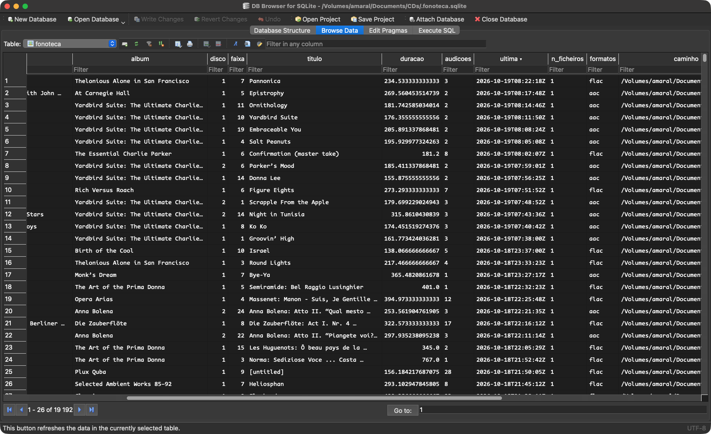
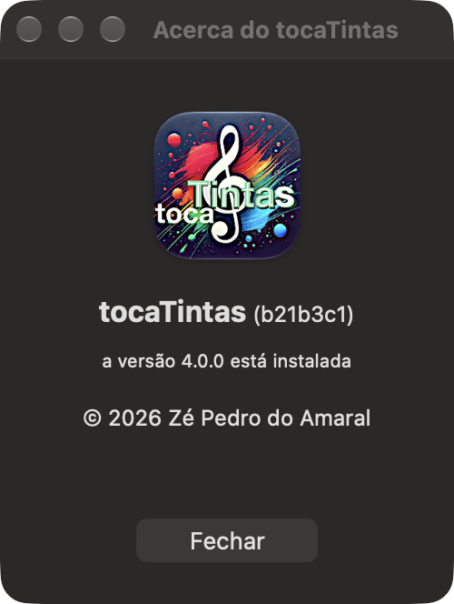

tocaTintas
tocaTintas 4.1.0 (Manual do utente)
Novembro de 2026
Nome
tocaTintas: leitor de música para macOS, com crossfeed, AirPlay e gravação.
Sinopse
tocaTintas
Ficheiro ▸ Abrir… lista.m3u | lista.m3u8
Ficheiro ▸ Tocar o CD
Ficheiro ▸ Ligar faixas do Música…
Ficheiro ▸ Sincronizar com o Música
Ficheiro ▸ Sair do modo corrente (⇧⌘P)
Ajuda ▸ Ajuda do tocaTintas (⌘?)
osascript -e 'tell application "tocaTintas" to comando'
Descrição
O tocaTintas toca a fonoteca guardada num volume e poderá gerir faixas em FLAC, WavPack, Monkey’s Audio, ALAC e outros formatos. Para o fazer, percorrerá uma pasta de música e todas as suas subpastas, e poderá tocar tudo o que lá encontre por ordem, ao acaso ou em repetição.
Cada faixa toca mostrando a sua capa. Esta poderá ser a que vem embutida no ficheiro ou, se essa não existir, a que estiver na pasta de imagem de capa do álbum. A capa aparecerá na janela do tocador, na notificação do sistema, na página WWW «a tocar» e no caso dos WavPack nos ícones gerados pelo Finder. Adicionalmente, um CD receberá também uma capa de álbum. Esta poderá ser a que já exista na fonoteca ou uma obtida no Cover Art Archive (ver CAPAS).
Além disso, faz uma série de ajustes de som:
- crossfeed bs2b e equalização AutoEQ para os auscultadores;
- áudio espacial nos AirPods, com o tocaTintas integrado no «A tocar» do sistema e comandado pelas hastes dos AirPods e pelas teclas multimédia do teclado;
- transmissão de áudio para receptores AirPlay e AirPlay 2, como o HomePod e a Apple TV;
- leitura de CDs, com metadados ad hoc vindos do MusicBrainz e do gnudb;
- contagem das audições numa base de dados da fonoteca (SQLite), que combina também o que se ouve na aplicação Música para produzir uma contagem integral da música independentemente da sua origem;
- gravação do que o Mac tocar, bit a bit e à frequência do original, incluindo o Dolby Atmos binaural da aplicação Música;
- um histograma de frequências em tempo real e sincronizado mesmo quando a reprodução é remota via AirPlay;
- suporte de AppleScript, para ser comandado de fora e para integração com o Música.
Janela principal

À esquerda fica a capa. Ao centro estão o artista, o álbum e a faixa, em etiquetas que deslizam quando o texto não cabe, e à direita o histograma. Por baixo de tudo fica a barra de progresso.
etiquetas deslizantes
Um texto que não caiba aparece truncado com «…» (Bach: Goldberg…BWV 988), como em qualquer etiqueta do macOS. Periodicamente, deslizará da direita para a esquerda para se poder ler todo. No fim, voltará à forma truncada. As bordas esbatem-se, para que o texto mude suavemente.
As três etiquetas revezam-se, e só uma deslizará de cada vez pela ordem: artista, álbum e faixa. As que cabem são saltadas. Quando começar uma faixa nova, o texto não deslizará durante 2 s. Uma passagem de texto só começará se a faixa durar tempo suficiente, para que um título não esteja a meio caminho quando a faixa seguinte começar.
escolher a música
O menu em baixo, à esquerda, lista as faixas da pasta corrente, cada uma com o formato entre parênteses: (flac), (wv) e, nos .m4a, (aac) ou (alac), conforme o que a fonoteca disser que lá está. Pode escrever-se o princípio do nome de uma faixa para a procurar. e programa autocompletará com o que encontrar que for coincidindo. O sistema funciona para caracteres acentuados e um título que comece por um número («12 Études») também se poderá procurar escrevendo esse número.
⏮ ▶ ⏸ ⏹ ⏭
Anterior, tocar, pausa, parar e seguinte. Quando o programa estiver a interagir com o Música e o tocador mostrar o que a aplicação Música estiver a tocar, os botões comandarão o Música (ver a seguir).
repetir, baralhar
O botão de repetir volta a tocar a faixa em curso quando ela chega ao fim, continuamente, até ser desligado. Cada repetição contará como uma audição nova. O botão de baralhar baralha a lista escolhida (ou a fonoteca inteira) uma vez, e essa ordem manter-se-á até ao botão ser desligado. Nenhuma faixa se repete antes de todas terem sido tocadas.
⏺
Grava para WAV (ver GRAVAÇÃO).
⏏
Ejecta o CD. Este botão só ficará activo quando houver um disco no leitor.
auscultadores (à esquerda, por baixo da capa)
Liga e desliga o tratamento de som para os auscultadores. O tratamento inclui crossfeed e equalização. Este tratamento funciona sem mexer no volume, para se poder comparar o som com e sem tratamento. Cor quer dizer ligado e branco desligado. Sem auscultadores ligados, o botão apitará se premido mas nada mudará.
AirPlay (à direita, por baixo do histograma)
Escolhe o receptor. Com ⌘-clique, a sessão com o receptor corrente será reaberta, o que resolverá os casos em que o receptor tenha adormecido ou quando a rede tiver sido interrompida durante algum tempo.
O que a aplicação Música toca
Quando o programa Música estiver a tocar e o tocaTintas não estiver, o tocador mostrará a música que o programa Música estiver tocando: a capa, o artista, o álbum, o título e a barra de progresso. O título leva ♫, o número da faixa e o número total de faixas do álbum à frente do título da faixa, para que seja claro que vem do Música e não da fonoteca. Este modo serve sobretudo para gravar. Logo que o tocaTintas toque alguma coisa sua, a janela voltará a ser sua.
os botões
Com o Música no tocador, os botões ⏮ ▶ ⏸ ⏹ ⏭ comandam o Música. O ⏸ alterna entre pausa e reprodução, como no tocaTintas. O ⏮ vai sempre à faixa anterior, também como no tocaTintas, e não ao princípio da faixa, como o botão do próprio Música. O ⏹ pára o Música e devolve a janela ao tocaTintas. Para voltar ao tocaTintas mesmo com o Música a correr, escolhe-se uma faixa da fonoteca ou simplesmente pára-se primeiro o Música.
a contagem
No canto inferior direito do tocador é mostrado quantas vezes a faixa já tocou. Para as faixas da biblioteca do Música, a contagem é a do próprio Música. O Música não guarda qualquer contagem para as faixas do catálogo do Apple Music que não tiverem uma cópia local e para as das estações. Nestes casos, gera-se uma entrada normalizada de contagem na base de dados. Esta contagem na base de dados do tocaTintas combinará essas audições do Apple Music com as audições da mesma música nos ficheiros e nos CDs (ver AUDIÇÕES DO MÚSICA).
a capa
Para as faixas da biblioteca do Música, a capa será a que o Música der. Para as faixas do catálogo e das estações do Apple Music, o tocaTintas irá buscar a capa directamente ao catálogo da Apple através da pesquisa pública do iTunes da loja do país onde o Mac estiver. Procurará primeiro o artista e, entre os álbuns dele, o que tenha o nome do que estiver a ser tocado. Se isto não funcionar, pesquisará o álbum pelo artista e pelo nome e, por fim, a faixa pelo artista e pelo título, e dela inferirá o nome do álbum. O nome do álbum compara-se sem contar maiúsculas e acentos e, se for preciso, sem sufixos de edição como «(Deluxe Version)», «- EP» ou «- Single». Entre os álbuns que coincidam, os do mesmo artista terão prioridade. Não havendo correspondência, ficará a imagem genérica, pois capa nenhuma será melhor do que capa errada. Por tudo isto, a capa poderá chegar uns instantes depois do resto.
Formatos
FLAC, WavPack (.wv), Monkey’s Audio (.ape), ALAC e AAC (.m4a), AIFF, MP3 e Opus. Quando a mesma faixa existir em vários formatos, a preferência segue a ordem desta lista.
As etiquetas lêem-se do próprio ficheiro: comentários Vorbis no FLAC e no Opus, e APEv2 no WavPack e no Monkey’s Audio.
Capas
Ficheiros
Primeiro procura-se a capa embutida, que é o bloco PICTURE do FLAC ou o item Cover Art (Front) do APEv2. Se não houver, procura-se na pasta do álbum, por esta ordem:
albumart_backup/cover.jpgou.png, onde o abcde(1) guarda a capa de cada álbum;cover.jpg,folder.jpg,front.jpg,cover.pngefolder.png;- qualquer imagem da pasta, por ordem alfabética.
O terceiro passo existe por causa do abcde. Ao embutir a capa nos vários formatos, ele poderá apagar a cover.jpg e a deixar só as cover-resized-NNNN.jpg.
CDs
As fontes consultam-se pela ordem escolhida no separador CD das Preferências do tocaTintas: a imagem da pasta do mesmo álbum na fonoteca ou a do Cover Art Archive. Neste último, tenta-se primeiro a capa da edição que o MusicBrainz identificou, depois a de outra edição do mesmo disco e, por fim, a do grupo de lançamento, que pode ser a de outra edição do mesmo álbum, mesmo noutro formato. O gnudb não tem capas.
Aplicação Música
Ver o que a aplicação Música toca, na janela principal.
Sem capa
Um CD cuja capa não tenha sido encontrada e uma faixa sem capa ficarão com a imagem genérica do tocaTintas.
Fonoteca
A pasta de música escolhe-se nas Preferências, no separador Música. O tocaTintas percorrerá então todas as subpastas e encontrará os ficheiros de áudio nelas contidos.
Dentro dessa pasta principal poderá estar .fonoteca.sqlite, a base de dados mantida pelo verificar_md5IV.sh e pelo fonoteca.py. Nessa base de dados, cada música tem um UUID, que é o mesmo na etiqueta FONOTECA_ID do ficheiro e na faixa do CD donde veio. O tocaTintas acrescenta-lhe o número de audições e os discos que tocou antes de terem sido riporinados. Quando preenche um campo, só o faz se ele estiver vazio, e nunca apaga nem substitui informação (ver A BASE DE DADOS DA FONOTECA).
A base de dados pode estar num disco externo mesmo que esteja em pausa. Todo o fluxo de acesso à base de dados passa por uma fila própria, fora do thread principal, e se a base não estiver disponível, o tocaTintas continuará a tentar actualizar a base de dados até ao disco acordar ou ser outra vez montado.
Registo automático
Um álbum novo, ou uma pasta que tenha mudado de nome ou de sítio, entrará na base de dados sem ser preciso correr manualmente quaisquer programas. O tocaTintas acompanha a pasta de música pelo FSEvents do macOS e, quando ela ficar um minuto sem mudanças, correrá automaticamente o fonoteca.py registar nas as pastas que mudaram. O minuto de espera existe porque um rip ou um corte escrevem durante muito tempo, e o registo pode gravar o FONOTECA_ID nos ficheiros, o que nunca deve acontecer num ficheiro incompleto.
O registo trata dos ficheiros novos, dos que mudaram de sítio (reconhecidos pelo MD5 do áudio e pelo FONOTECA_ID), dos que desapareceram e das audições que não tenham ficheiro. Não verifica a integridade da informação do áudio, que continua a ser trabalho do verificar_md5IV.sh via determinação e comparação de MD5. A saída fica em registar.log. Se houver ficheiros com problemas, ou se o registo não chegar a correr, aparecerá uma notificação.
As MD5 do áudio guardam-se num único .md5sum.txt, na pasta da base (CDs/). O verificar_md5IV.sh refá-lo a partir da base de cada vez que corre, e apagará os .md5sum.txt antigos que encontre nas subpastas.
Verificação diária
Uma vez por dia, o tocaTintas corre o fonoteca.py consistencia, que só lê e não muda nada. Reconcilia a base de dados com a realidade: ficheiros de áudio na pasta de música que a base não tem, e faixas do Música que deviam estar ligadas à versão local do seu álbum e não estão. Se encontrar alguma coisa, aparecerá a notificação «Fonoteca: há contas por acertar», com o primeiro problema, e o resto fica em sincronizar-musica.log. Se estiver tudo certo, não diz nada. A verificação correrá mesmo com o Música fechado.
A base de dados da fonoteca

fonoteca no DB Browser for SQLite, ordenada pela última audição.A base de dados indentifica três coisas: a música (uma gravação), o ficheiro (onde ela está agora, num dado formato) e o disco (o CD de onde veio). Uma dada música pode ter vários ficheiros, por exemplo um FLAC e um AAC da mesma gravação, e pode estar em vários discos, como uma compilação e o álbum original. As audições contam-se na música, e por isso não se perdem quando um ficheiro muda de nome, de pasta ou de formato. A aplicação Música entra como uma quarta fonte, com as suas próprias faixas.
Tabelas
musicas (37 675)
Uma linha por gravação. A chave é um UUID v4, o mesmo que está na etiqueta FONOTECA_ID dos ficheiros. Guarda o título, o artista, o álbum, o disco, a faixa e a duração, e, como referência, os identificadores do MusicBrainz da gravação e do lançamento. Cerca de metade são músicas que só existem no programa Música.
ficheiros (19 471)
Uma linha por ficheiro de áudio, com a música a que pertence, o MD5 do áudio, o formato, o caminho e a última vez que o caminho foi confirmado. A MD5 é exclusivamenta a do som: das tramas ou dos pacotes de áudio tal como estão, sem considerar os metadados, para que mudá-los não a altere. Só o Monkey’s Audio é descodificado para PCM. Um ficheiro que desapareça, ficaria com o caminho a NULL em vez de ser apagado da base de dados. Assim, a sua história continuaria na base de dados, e a MD5 permitiria reconhecê-lo se voltasse a aparecer mais tarde.
discos (1 237)
Os CDs, pelo identificador CDDB de oito dígitos e, quando se conhecem, pela TOC completa e pelo disc ID do MusicBrainz. Usar só o CDDB não basta, porque discos diferentes podem partilhá-lo. Por isso, o que é único é o par CDDB e TOC.
faixas_cd (15 991)
A ligação entre discos e músicas: a faixa n do disco d é a música m. É por esta via que um CD metido no leitor encontra os nomes, a capa e o ganho na fonoteca, e que uma audição do CD e um ficheiro riporinado contam para a mesma música.
faixas_musica (37 896)
As faixas da aplicação Música, pelo persistent ID que o Música lhes dá, cada uma ligada à sua música. O estado diz como foi ligada: automaticamente, por escolha, com uma música própria criada para ela, ou ainda pendente de escolha. Guarda também o que o Música mostra (artista, álbum, faixa, título e duração), a contagem que o Música tinha quando a faixa entrou na base e a última contagem já registada. As faixas do catálogo tocadas fora da biblioteca têm uma chave tirada da própria faixa, porque o persistent ID delas muda a cada reprodução. Ver AUDIÇÕES DO MÚSICA.
candidatas_musica (5 098)
Para cada faixa pendente, as músicas a que pode corresponder, pela ordem de preferência, com o critério que as encontrou e a diferença de duração.
audicoes (992)
Uma linha por audição, com a música, a data e hora (ISO 8601, em UTC), a origem (ficheiro, cd ou musica) e o ficheiro, o disco ou a faixa do Música que tocou. Uma faixa do tocaTintas conta ao fim de 5 segundos de audição efectiva. Pausar e retomar não avançarão a contagem, nem avançar antes dos 5 segundos, e cada reprodução contará uma vez. As regras da aplicação Música estão em AUDIÇÕES DO MÚSICA.
Vistas
contagens
Por música, o total de audições e a data da última. O total soma as contagens importadas, as que o Música tinha quando as suas faixas foram ligadas à música e as audições registadas.
ficheiros_contagens
Por ficheiro, quantas vezes a música tocou ao todo e quantas tocou este ficheiro. É o que permite comparar o FLAC com o AAC da mesma música.
fonoteca
A vista de leitura, a da Fig. 3. Tem uma linha por música, com as audições, a última, quantos ficheiros tem, os formatos (aac+flac), o caminho preferido (o do FLAC, se houver) e os CDs onde está, no formato cddb:faixa.
audicoes_locais
As audições à hora local, a mais recente primeiro. Mostra a hora (WET ou WEST, conforme a data), o artista, o álbum, o título, quantas vezes a música já tocou ao todo (a contagem que a janela mostra) e o que tocou: flac, aac, alac, mp3, cd ou música. A tabela guarda as horas em UTC, para que a ordem e as contas não se baralhem na mudança de hora. A conversão faz-se na leitura e acompanha a hora de Verão de cada audição.
Quem escreve o quê
O verificar_md5IV.sh e o fonoteca.py mantêm as músicas, os ficheiros, os discos e as faixas dos CDs. O fonoteca.py sincronizar-musica mantém as faixas do Música e regista as audições que o Música contou. O tocaTintas acrescenta:
- uma linha em audicoes por cada faixa ouvida;
- uma linha em musicas só com o UUID, quando toca um ficheiro com
FONOTECA_IDque o fonoteca.py ainda não viu, e que este completa da vez seguinte; - o disco e as suas faixas, quando toca um CD que a base ainda não conhece. Os nomes vêm do MusicBrainz ou do gnudb e ficam à espera do ficheiro que um dia for riporinado;
- a TOC e o disc ID de um disco conhecido só pelo CDDB, e o título, o artista e o álbum de uma faixa que não os tinha;
- as escolhas feitas na janela Ligar faixas do Música, e as audições das faixas do catálogo, pelo
fonoteca.py ouvir-musica.
Os campos da quarta alínea só se escrevem quando estão vazios. O que os scripts da fonoteca lá puseram nunca é substituído.
Exemplos
sqlite3 -readonly CDs/.fonoteca.sqlite \
"SELECT audicoes, artista, titulo FROM fonoteca
ORDER BY audicoes DESC LIMIT 10"As dez músicas mais ouvidas. Com -readonly, a consulta não interfere com o tocaTintas a correr.
sqlite3 -readonly -header -column CDs/.fonoteca.sqlite \
"SELECT * FROM audicoes_locais LIMIT 20"As últimas vinte audições, à hora local.
Audições da aplicação Música
O que se ouve na aplicação Música também conta na base da fonoteca, e conta na música certa. Se a mesma gravação existir num ficheiro ou num CD, as audições juntam-se às dessa música. Se não existir, a faixa do Música fica com uma música própria.
As três regras
| O que toca | Quando conta | Quem conta |
|---|---|---|
| Um ficheiro ou um CD, no tocaTintas | aos 5 s de audição | o tocaTintas |
| Uma faixa da biblioteca do Música | quando a faixa chega ao fim | o Música, com o seu «played count» |
| Uma faixa do catálogo fora da biblioteca, ou de uma estação | aos 5 s de audição | o tocaTintas |
A terceira regra existe porque o Música não guarda contagem para as faixas que não estão na biblioteca: para ele, ficam sempre a zero. Nesse caso, quem conta é o tocaTintas, pela mesma regra dos seus ficheiros, enquanto mostra o Música na janela. As pausas não contam, e cada reprodução conta uma vez. Se a faixa for depois acrescentada à biblioteca, o tocaTintas deixa de a contar e a contagem passa a ser a do Música.
O Música continua a tocar quando o tocaTintas fecha ou reinicia. Por isso, a audição em curso fica guardada a cada segundo. Ao voltar, se o Música ainda estiver na mesma faixa e não tiver voltado ao princípio, a audição continua onde estava: o que já tinha tocado soma, e o que já tinha contado não conta outra vez.
Sincronização
O fonoteca.py sincronizar-musica lê a biblioteca do Música de uma vez, em poucos segundos, e só se o Música estiver aberto. O tocaTintas corre-o um minuto depois de arrancar e depois de meia em meia hora. Também se pode correr à mão em Ficheiro ▸ Sincronizar com o Música.
A cada sincronização:
- cada faixa nova é ligada à sua música, fica pendente de escolha ou recebe uma música própria. A contagem que o Música já tinha passa a contar logo que a faixa está ligada;
- cada aumento da contagem do Música numa faixa ligada passa a ser uma audição, com a data da última reprodução que o Música guardou;
- as faixas pendentes são reavaliadas, porque entretanto pode ter aparecido a versão certa;
- uma música própria funde-se com a versão local logo que esta apareça sem dúvida, por exemplo depois de se gravar o álbum a partir do Música;
- as ligações automáticas são revistas: uma faixa ligada a uma música sem ficheiro, ou a uma música de outro álbum, passa para a versão local do mesmo álbum quando ela existe, com o mesmo número de faixa, um título parecido e uma duração que não difere mais de 2 s. As escolhas feitas à mão na janela Ligar faixas do Música nunca são mudadas.
Nenhuma contagem vem de fora da base. O antigo contagens.json já não é lido: o que lá estava entrou uma vez, pela importação, e daí em diante só contam as audições registadas.
Se o Música passar a mostrar uma contagem mais baixa, por exemplo porque a faixa foi apagada e reposta, o que já estava registado fica.
Como se liga uma faixa
Uma faixa do Música liga-se sozinha a uma música da base quando há uma única candidata, com uma duração que não difere mais de 2 s, segundo um destes critérios, do mais estreito para o mais largo:
- o artista, o álbum, o disco, a faixa e o título iguais;
- o artista principal e o título iguais;
- o artista principal e o título iguais, sem contar sufixos de remasterização como «(2015 Remaster)».
Há ainda um caso que se liga sozinho: o mesmo artista, o mesmo álbum e o mesmo título, com uma diferença de duração até 5 s. É o mesmo disco noutra masterização, ou com pausas diferentes no início e no fim. O «Sea, Swallow Me» do CD dura 191,4 s e o do Música 189,0 s. No título só se ignora a remasterização: «(Mono Mix)», «(EP Version)» ou «(Alternate Mix)» são outras misturas e não se ligam assim.
Uma candidata que só exista na aplicação Música nunca passa à frente de uma versão local possível. Nesse caso, a faixa fica para escolha.
Ficam pendentes as faixas com candidatas mas sem nenhuma certa. São encontradas pelo título sem sufixos de versão («Live», «Mix», «Edit»…), pelo álbum e número da faixa, muito usado na música clássica, em que o Música e o MusicBrainz escrevem o artista de maneiras diferentes, ou pelo título com outra duração. Uma faixa pendente ainda não conta. O que o Música tiver contado entretanto entra quando ela for ligada.
A janela «Ligar faixas do Música»
Abre-se em Ficheiro ▸ Ligar faixas do Música…, ou clicando na notificação «Faixas do Música por ligar», que aparece quando o número de pendentes aumenta. É o mesmo género de escolha que o Música propõe quando um CD tem várias entradas.
À esquerda estão as faixas pendentes, com um campo para filtrar por artista, álbum ou título. À direita estão as candidatas da faixa escolhida, com a sugestão já seleccionada, a diferença de duração, onde está cada uma (o formato, o CD ou «só no Música») e o critério que a encontrou. A última opção é sempre Nenhuma — fica como música própria.
Ligar (↩, ou duplo clique)
Liga a faixa à candidata escolhida e passa à seguinte.
Saltar
Deixa a faixa pendente e passa à seguinte.
Aceitar o álbum
Aceita as sugestões de todas as faixas pendentes do mesmo álbum, depois de uma confirmação que diz quantas ficam ligadas e quantas ficam como músicas próprias. É a forma rápida de tratar os discos de música clássica.
▶︎ Ouvir 10 s
Toca dez segundos da versão local, a partir de 30 % da duração, para comparar de ouvido. Não conta como audição. Só funciona com os formatos que o macOS lê sozinho (FLAC, ALAC, AAC e MP3).
A sugestão é a primeira candidata, excepto quando só se encontrou uma pelo título com outra duração. Nesse caso, a sugestão é Nenhuma.
Listas M3U e M3U8
Ficheiro ▸ Abrir… (⌘O)
Aceita listas .m3u e .m3u8, que para o macOS são o mesmo tipo de ficheiro (public.m3u-playlist). As listas abertas ficam em Ficheiro ▸ Abrir recentes.
Ficheiro ▸ Sair do modo corrente (⇧⌘P)
Volta à fonoteca e mantém a faixa que está a tocar.
O que se lê da lista
- Uma faixa por linha. O caminho pode ser absoluto, começar por
~, ser um endereçofile://ou ser relativo. Neste caso, conta a partir da pasta onde está a lista, como nos outros leitores. - As linhas que começam por
#são ignoradas, incluindo#EXTM3Ue#EXTINF. O título e a duração vêm sempre das etiquetas do próprio ficheiro, nunca da lista. - O ficheiro lê-se em UTF-8, que é o que o
.m3u8garante, com ou sem a marca de ordem dos octetos no início. Se não for UTF-8, lê-se em Windows-1252 e, por fim, em Latin-1, as codificações dos.m3uantigos. Um ficheiro em Windows-1252 com acentos quase nunca é UTF-8 válido, e por isso as tentativas sucessivas não se confundem.
Ao abrir
A lista passa a ser o que toca, e a fonoteca fica onde estava. Abrir uma lista não interrompe o que se está a ouvir. Se a faixa em curso fizer parte da lista, continua a tocar, já dentro dela. Se não fizer, acaba de tocar e a seguinte é a primeira da lista. Com o leitor parado, nada arranca sozinho, e o ▶ começa pela primeira faixa. Com o baralhamento ligado, a lista é baralhada.
Limitações
- Os endereços de rede (
http://…) não são suportados. - O tocaTintas lê listas, mas não as grava.
CD de áudio
Quando se mete um CD, o tocaTintas pergunta se o deve tocar. Se sim, as faixas do disco passam a ser a lista em vigor, como uma lista M3U, e Sair do modo corrente volta à fonoteca.
Os nomes e a capa procuram-se pela ordem escolhida no separador CD das Preferências:
- na fonoteca, pelo identificador CDDB ou pelo disc ID do MusicBrainz guardado nos FLAC desse disco;
- na internet, primeiro no MusicBrainz (TOC completa, disc ID e gravações) e, para os discos que ele não conheça, no gnudb, o antigo freedb. O gnudb exige um endereço de email, e sem ele não é usado. Também não tem capas.
As respostas da internet ficam guardadas, e cada disco só se pede uma vez. O ganho ReplayGain vem sempre da fonoteca, quando o álbum lá está.
O arranque do leitor
O cddafs do macOS não guarda cache, e duas leituras simultâneas atrasam-se uma à outra. Ao arrancar, o leitor físico fica parado entre 4 e 6 segundos. Durante esse tempo a janela diz «A preparar o leitor de CD…». Não é uma falha.
O caminho do som
A saída do sistema é o BlackHole, um aparelho de áudio virtual. Tudo o que o Mac toca entra nele, e dele parte para três sítios:
tocaTintas.app.Por isso, o tratamento dos auscultadores não afecta o que vai para o AirPlay, e a normalização do AirPlay não afecta o que vai para os auscultadores. Nas colunas do Mac, o som passa sempre sem tratamento.
A excepção são os auscultadores Bluetooth, como os AirPods: com eles como saída do sistema, o som vai directo para lá e o BlackHole só recebe uma cópia, para o histograma (ver AIRPODS).
frequência de amostragem
O BlackHole trabalha a uma única frequência, a que estiver definida na Configuração de Áudio MIDI, e tudo o que o Mac toca é convertido para ela antes de lá entrar. A 44,1 kHz, a frequência dos CDs, a fonoteca passa sem conversão nenhuma, e é essa a frequência para o uso de todos os dias. As outras servem para gravar (ver GRAVAÇÃO).
Os três auxiliares seguem a frequência do BlackHole. O bs2b_bridge lê-a ao arrancar e escreve-a na configuração do CamillaDSP, que de outro modo forçaria o BlackHole para a sua própria frequência e desfaria qualquer mudança. O cava abre o BlackHole à frequência dele. O caminho do AirPlay converte-a para a do receptor (ver AIRPLAY). Mudar a frequência com o tocaTintas aberto obriga a ponte a reiniciar, e o som dos auscultadores cala-se por um instante.
Auscultadores
Crossfeed
O crossfeed mistura em cada ouvido um pouco do canal oposto, filtrado, como a cabeça faria ao ouvir colunas. Isso desfaz a sensação de o som estar dentro da cabeça. Há três intensidades, no separador DSP:
Suave
700 Hz / 4,5 dB. É o perfil por omissão do bs2b.
Médio
700 Hz / 6,0 dB, o perfil de Chu Moy.
Forte
650 Hz / 9,5 dB, o perfil de Jan Meier.
A mudança tem efeito imediato. O som cala-se por um instante enquanto o filtro reinicia.
Equalização
O crossfeed imita a cabeça, e a equalização corrige os auscultadores. No separador Auscultadores escolhem-se a marca e o modelo entre 523 correcções do projecto AutoEQ, de 106 marcas, para o alvo Harman over-ear. Todas foram medidas por oratory1990, excepto a do Sony MDR-V600, que vem da Innerfidelity. A do Sony MDR-7506 vem embutida.
Para acrescentar outra, põe-se o ficheiro ParametricEQ.txt em ~/Library/Application Support/tocaTintas/eq, na raiz ou numa subpasta com o nome da marca. A linha Preamp é lida e respeitada, e é ela que impede o reforço de graves de saturar a saída.
AirPods
Com uns AirPods, ou outros auscultadores Bluetooth, como saída do sistema, o tocaTintas toca directamente para eles. O tratamento é o dos próprios AirPods: a equalização, o cancelamento de ruído e o áudio espacial. O crossfeed e a equalização AutoEQ não se aplicam, e o botão dos auscultadores não tem efeito.
O «A tocar» do sistema
O tocaTintas aparece no «A tocar» do Centro de Controlo e do menu, com o título, o artista, o álbum, a capa e o tempo decorrido. Isto vale para qualquer saída, e não só para os AirPods. Daí, e das teclas multimédia do teclado, chegam tocar, pausa, parar, seguinte e anterior. Os saltos dentro da faixa não estão disponíveis.
Nos AirPods, as hastes comandam o tocaTintas:
- um aperto, em qualquer das hastes, pausa e retoma;
- dois apertos passam à faixa seguinte;
- três apertos voltam à anterior;
- tirar um auricular do ouvido pausa.
Com o Música na janela, estes comandos vão para o Música, como os botões (ver JANELA PRINCIPAL).
Áudio espacial
O «Espacializar estéreo» dos AirPods, com e sem seguimento da cabeça, só fica disponível se o leitor o pedir expressamente. O leitor habitual do tocaTintas não o pode pedir. Por isso, com a saída em Bluetooth, as faixas tocam por outro motor, que entrega o som ao sistema em blocos e pede a espacialização do estéreo. Encontra-se no menu do som ou no Centro de Controlo, carregando em › ao lado dos AirPods.
O motor escolhe-se no início de cada faixa. Se a saída mudar a meio, dos AirPods para a cavilha ou o contrário, o tocaTintas troca de motor e continua no mesmo ponto, sem parar a faixa.
O motor novo toca FLAC, ALAC, AAC, MP3, WAV e AIFF. O WavPack, o Monkey’s Audio e o Opus continuam pelo caminho de sempre, sem áudio espacial. O ReplayGain não se aplica, tal como nos outros auscultadores, porque só o AirPlay o usa.
O histograma
O som não passa pelo BlackHole, e o cava ficaria sem nada para ler. Por isso, o motor envia ao mesmo tempo uma cópia de cada bloco para o BlackHole, com o mesmo relógio. As barras acompanham o que se ouve nos AirPods, sem atraso a acertar. Se o BlackHole estiver silenciado, a cópia chega a zeros e o histograma fica parado. Isso acontece, por exemplo, depois de se carregar na tecla de silenciar com ele como saída.
Passagem automática
É o macOS que passa o som para os AirPods quando se põem nos ouvidos. Com música a tocar, ele só o faz se o som estiver a sair pelas colunas do Mac. Com auscultadores na cavilha, os AirPods não tiram o som, e escolhem-se à mão no menu do som.
A ponte dos auscultadores mantém o CamillaDSP sempre activo, mesmo em pausa, e o macOS conta isso como música a tocar. Se o sistema ficar convencido de que a rota é Bluetooth quando já não é, deixa de passar o som automaticamente enquanto o tocaTintas estiver aberto. Isto aconteceu uma vez, depois de várias trocas manuais. Desfaz-se com uma passagem com o tocaTintas fechado, ou com sudo killall audioaccessoryd.
AirPlay
A transmissão é feita pelo raop_play, que vem dentro da aplicação e fala os dois protocolos: o AirPlay 1, para os receptores antigos, e o AirPlay 2, para os que só aceitam esse, como o HomePod desde o seu sistema 27. O tocaTintas escolhe o protocolo pelo que o receptor anuncia em /info.
A API de AirPlay da Apple não está disponível para programas de terceiros, porque exige autorizações restritas. É por isso que o caminho é este.
44,1 kHz e 16 bits, sempre
O protocolo transporta ALAC a 44,1 kHz e 16 bits, e o raop_play não aceita outra coisa. Se o BlackHole estiver a outra frequência, por exemplo a 48 kHz para gravar um master do Apple Music, o tocaTintas converte o som para 44,1 kHz antes de o entregar, com o conversor do macOS na qualidade máxima. Não se ouve diferença, mas só a 44,1 kHz é que o que chega à aparelhagem é, bit a bit, o que está no ficheiro.
Normalização do volume
No separador AirPlay, a partir das etiquetas ReplayGain:
Nenhuma
O som vai como está no ficheiro.
Por faixa, limitado pelo pico
Todas as faixas vão ao mesmo volume, com o ganho reduzido ao máximo que cada faixa aguenta sem ser ceifada.
Por faixa, ganho integral
Aplica o ganho que a etiqueta indica, mesmo que os picos passem de 0 dBFS e sejam ceifados.
Por álbum, limitado pelo pico
Iguala os discos entre si e mantém as diferenças de nível dentro de cada um, que um disco tem de propósito. Se não houver etiquetas de álbum, usa as de faixa.
As faixas sem etiquetas tocam como estão.
Compensar a atenuação do volume do sistema
O cursor de volume do BlackHole atenua o áudio antes de tudo o resto, incluindo a transmissão. Com esta opção, o que sai para o AirPlay vai sempre ao nível do ficheiro, e o cursor do Mac passa a controlar só os auscultadores. O volume da aparelhagem controla-se na própria aparelhagem.
Atraso do histograma
O histograma acompanha o que se ouve na sala. Ver SINCRONIZAÇÃO DO HISTOGRAMA COM O AIRPLAY.
Sincronização do histograma com o AirPlay
O cava lê o BlackHole, no início da cadeia, e mostra o áudio no instante em que é capturado. O receptor AirPlay toca esse mesmo áudio alguns segundos depois. Sem correcção, as barras andariam adiantadas em relação ao que se ouve, e o bombo apareceria antes de soar.
A correcção tem duas partes: medir o atraso e atrasar o histograma outro tanto.
Medir: o relógio do raop_play
O raop_play é lançado com -f FIFO e escreve aí uma linha por segundo, tirada do seu controlador de sincronismo:
<blocos enviados> <head_ts>O primeiro número conta os blocos de áudio novo que já foram para a rede, a partir de zero. Cada bloco tem 352 tramas, o máximo que o protocolo permite. Do lado do tocaTintas, sabe-se quantas tramas foram capturadas e quantas a correcção de deriva deitou fora. O que foi capturado e ainda não foi enviado está em trânsito, no tampão circular, no encadeamento do sistema ou já entregue ao raop_play. Somando-lhe a latência pedida ao receptor (-l, um segundo por omissão), obtém-se o atraso total:
Δ = (capturadas − cortadas − enviadas + latência) / 44100A conta parte do que foi capturado, e não do que foi entregue ao raop_play, para incluir o tampão circular. Normalmente está quase vazio, mas a deriva entre o relógio do Mac e o do receptor pode enchê-lo até seis segundos, e é precisamente aí que interessa saber o atraso.
Porque não o head_ts
O segundo número, a marca temporal RTP, avança com tudo, incluindo os reenvios. Parece útil, mas não serve. É recalculado a partir do relógio NTP a cada arranque de fluxo, e por isso uma diferença de head_ts que atravesse uma pausa mede o tempo que passou, e não tramas. O contador de blocos não conta o áudio reenviado ao retomar, que não é novo, e por isso é a fonte certa. Isto foi verificado no código do rust-raop-player (raop_client.rs).
Atrasar: a linha de atraso
As tramas do cava, cerca de 25 por segundo, entram numa fila com a hora a que foram lidas, e só se desenham quando passaram Δ segundos. O Δ actualiza-se uma vez por segundo, que é a cadência a que o raop_play o fornece.
- Quando o atraso cai de repente, porque a correcção de deriva cortou áudio, a fila inteira pode ficar vencida de uma vez. Nesse caso, desenha-se só a trama mais recente, porque mostrá-las todas seria reproduzi-las aceleradas. O áudio também salta, e o histograma salta com ele.
- Quando o atraso cresce, ao ligar o AirPlay, a fila tem de encher antes de haver alguma trama vencida. Se passarem 200 ms sem nada para desenhar, as colunas apagam-se. Deixar a última à vista seria mostrar o passado como se fosse o presente. O ecrã vazio é o correcto, porque ainda não soou nada que lhe corresponda.
- O atraso nunca passa de 8 segundos. A correcção de deriva não deixa o áudio em trânsito passar dos seis, e a latência é de um. Acima disso, é mais provável o relógio estar errado do que o áudio estar tanto tempo a caminho.
Quando se aplica
Só sem auscultadores. Com auscultadores ligados, ouve-se o som local, sem atraso, e o histograma acompanha esse, mesmo com o AirPlay a transmitir ao mesmo tempo. Sem auscultadores, o que se ouve é o receptor, e o histograma atrasa-se o Δ medido.
Um Δ igual a zero quer dizer «não sei», e não «estão sincronizados». Se o raop_play não tiver escrito nenhuma linha, o histograma não se atrasa. Ao fim de cinco segundos de transmissão sem linhas, o tocaTintas regista o problema.
Limitação
A soma da latência pressupõe que o receptor guarda exactamente as tramas que lhe foram pedidas. Um aparelho que guarde menos faz o Δ sair grande de mais, e o som chega antes das barras. É um desvio fixo de cada aparelho. Distingue-se de um erro de contagem pela forma: no registo é constante, enquanto um erro de contagem varia com o que se passou no fluxo.
Emparelhamento
A Apple TV 4K só aceita som de quem tiver feito um emparelhamento com ela. Faz-se uma vez, no separador Emparelhamento. Escolhe-se o aparelho, carrega-se em Emparelhar e escreve-se o código de quatro dígitos que aparece no ecrã da televisão.
As credenciais ficam no porta-chaves do Mac. Se o aparelho for reposto, o emparelhamento perde-se e é preciso fazê-lo de novo. O HomePod e a Apple TV antiga não precisam disto e não aparecem na lista.
Se se escolher um aparelho que ainda não foi emparelhado, o tocaTintas avisa e oferece-se para abrir o separador.
Gravação
O botão ⏺ grava para WAV em vírgula flutuante de 32 bits, em /var/tmp, onde fica até o álbum ser aprovado. A fonte escolhe-se no separador Gravação:
O que o Mac toca (BlackHole)
Tudo o que passa pela saída do sistema, à frequência do BlackHole. Se a saída não for o BlackHole, o tocaTintas avisa que a gravação vai sair em silêncio.
A aplicação Música (Dolby Atmos binaural)
Só o som do Música, captado directamente do processo. Quando o Música toca para os AirPods com o áudio espacial em Fixo, faz ele próprio o binaural do Atmos, e é isso que fica gravado, em estéreo a 48 kHz.
Os ficheiros chamam-se Recording_UUID.wav e Recording_Music_UUID.wav. Uma gravação parada sem som nenhum é apagada. Ao lado de cada uma fica um rascunho da TOC, Recording_UUID.toc.json: as faixas que o Música anunciou, com a trama do ficheiro onde cada uma começou, os silêncios digitais e o som que se tenha perdido pelo caminho. As faixas só ficam na TOC quando se grava pelo BlackHole. Serve para cortar as faixas depois, mesmo num álbum sem pausas entre elas. A vírgula flutuante não é um capricho. Com o volume do Mac abaixo do máximo, o sinal chega atenuado, e em 16 bits perderia resolução que nenhuma normalização posterior recupera. Em vírgula flutuante, a atenuação não custa nada.
Gravar o Apple Music bit a bit
O som só passa do Música para o BlackHole sem ser alterado se se verificarem três condições: o volume do Música no máximo, nenhum efeito ligado (equalizador, Sound Check ou transição entre faixas) e o BlackHole à mesma frequência do master. Se a última falhar, o Música reamostra o som sem avisar. A gravação ouve-se bem, mas já não é o master.
A frequência do master varia de álbum para álbum: 44,1 kHz num disco digital dos anos 90, 48 kHz em muitas edições recentes. As preferências do Música não a indicam, porque «Sem perdas, até 24 bits/48 kHz» é o máximo que ele aceita, e não o que cada álbum é. Quem a sabe é o próprio Música, e o tocaTintas pergunta-lha.
a frequência acerta-se sozinha
Para gravar pelo BlackHole, carrega-se no ⏺ e depois toca-se o álbum no Música, como sempre. Enquanto grava, o tocaTintas acompanha o Música:
- ao carregar no ⏺, se o Música já tiver uma faixa escolhida, o tocaTintas põe o BlackHole à frequência dela;
- quando o Música começa a tocar uma faixa a outra frequência e ainda não entrou som nenhum na gravação, o tocaTintas recomeça tudo à frequência certa. Pára a ponte dos auscultadores, muda o BlackHole, relança a ponte, recomeça a gravação num ficheiro limpo e volta a faixa ao início. Não se perde nada, porque o Música leva uns segundos a ter som depois de começar a tocar, e o que havia no ficheiro era esse silêncio. O Música não é posto em pausa, e isso é de propósito: ao sair de uma pausa, ele sobe o volume aos poucos durante cerca de 7 s, e essa subida ficaria no início da gravação;
- logo depois de uma faixa começar, o Música pode ainda não saber a frequência e responder «missing value». Nesse caso, a gravação começa já, e o tocaTintas volta a perguntar de meio em meio segundo, durante 10 s no máximo. Quando a resposta chega, acerta o BlackHole e recomeça a faixa, desde que o som gravado seja ainda só o da primeira faixa;
- com som já gravado, a frequência não muda a meio, porque um WAV só tem uma. Num álbum com faixas a frequências diferentes, que é raro, o aviso da grelha diz qual saiu reamostrada.
Cada mudança de frequência, e cada desistência, fica registada em frequencia.log. Sem isso, uma gravação à frequência errada não deixaria rasto do motivo.
pára no fim do álbum
Quando um álbum acaba, o Música costuma passar sozinho a outra coisa, ao acaso, e a gravação continuaria por ela dentro, muitas vezes a outra frequência e já reamostrada. Por isso, quando se grava pelo BlackHole, o tocaTintas toma nota do álbum da faixa que o Música tem, a tocar ou em pausa. Quando o Música passa a uma faixa de outro álbum, ou pára, a gravação acaba sozinha um segundo depois, como se se tivesse carregado no ⏺, e uma notificação diz «Gravação terminada: fim do álbum». A pausa não faz a gravação parar. Para gravar de seguida uma lista com faixas de vários álbuns, desliga-se Parar a gravação no fim do álbum, no separador Gravação.
e volta ao que estava
No fim, ao parar a gravação, ao sair do tocaTintas com ela a decorrer ou se ela não chegar a arrancar, o BlackHole volta à frequência que tinha antes, normalmente os 44,1 kHz dos CDs. A frequência anterior fica guardada nas preferências enquanto se grava, e só é apagada depois de o BlackHole a ter de facto. A reposição tenta três vezes, com um segundo de intervalo. Se falhar, o tocaTintas avisa e volta a tentar no arranque seguinte, como também acontece se a aplicação for abaixo. Com o AirPlay a transmitir, cada mudança de frequência reabre a sessão com o receptor, como o ⌘-clique, porque a transmissão podia ficar a falhar. Sair do tocaTintas a meio de uma gravação fecha o ficheiro como se se tivesse carregado no ⏺.
Na primeira gravação, o macOS pede autorização para o tocaTintas controlar o Música. Se for recusada, a gravação faz-se como antes, à frequência que o BlackHole tiver.
a grelha
O som digital são números, e o de um master de 16 bits só pode tomar 65 536 valores, que são os degraus da grelha. Gravada em vírgula flutuante sem ser alterada, cada amostra cai exactamente num desses degraus: multiplicada por 215, dá um número inteiro. Num master de 24 bits, multiplica-se por 223. Uma reamostragem, um volume abaixo do máximo ou um equalizador recalculam as amostras, e quase todas saem dos degraus. É assim que se sabe, só a partir do ficheiro, se a gravação é o master.
O tocaTintas verifica-o enquanto grava, em janelas de um segundo de som. O silêncio digital não conta, porque o zero está em todas as grelhas. O resultado vê-se pela cor do ⏺ durante a gravação:
- vermelho: bit a bit, sem nenhuma amostra fora da grelha até agora;
- amarelo: houve algumas amostras fora da grelha, esteve mal e já não está, ou perdeu-se som pelo caminho (o tocaTintas esteve parado, por exemplo suspenso por um depurador, e o que o BlackHole entregou nesse tempo não chegou ao ficheiro). Não volta a vermelho, porque há um pedaço do ficheiro que não é o master, e isso não se desfaz;
- laranja: está mal agora, com mais de metade da última janela fora da grelha de 24 bits. Da primeira vez que isto acontece aparece também um aviso com as causas habituais.
O Música aplica uma rampa de cerca de 25 ms ao começar a tocar e ao saltar de faixa. Essas rampas saem sempre fora da grelha, mas ficam encostadas a silêncio digital (a de entrada depois dele, a de saída antes) e caem fora da música. Por isso, até 50 ms de cada lado de um silêncio, não contam. O registo diz ainda se a gravação é de 16 ou de 24 bits.
Processamento automático
Quando uma gravação pelo BlackHole acaba, o tocaTintas trata dela sozinho, a partir do WAV e do rascunho da TOC, e deixa as faixas em /var/tmp/Artista/Álbum/, à espera de aprovação. Uma notificação dá o resumo, e clicá-la mostra a pasta no Finder. O relatório completo fica na pasta, em Processamento.txt. O WAV e a TOC ficam onde estavam.
- Rampas. Ao arrancar e ao saltar de faixa, o Música sobe ou desce o volume durante cerca de 25 ms, junto ao silêncio. O tocaTintas mede essa curva no próprio ficheiro e desfá-la, mas só se todas as amostras voltarem à grelha de 16 ou de 24 bits, com erro abaixo de 0,01 LSB. Senão, a rampa fica como está, e o relatório diz porquê.
- Cortes. A primeira faixa começa no primeiro som. Cada uma das seguintes começa onde a põe a soma das durações do catálogo da Apple, ao milissegundo, desde que a marca do Música concorde, com uma margem de 0,25 s. Num álbum sem pausas entre faixas, essas são as fronteiras verdadeiras. Se a marca discordar (uma pausa, um salto de faixa), manda a marca. O som perdido pelo caminho é descontado. Uma faixa a que falte o início ou o fim não sai, mas fica no relatório.
- FLAC. Os FLAC são de 16 ou de 24 bits, conforme a grelha em que o álbum cai. Quando a gravação é bit-exacta, os FLAC também o são, e o codificador confirma cada um, descodificando-o.
- Etiquetas. Vêm do catálogo da Apple, da loja americana, que dá os géneros em inglês, como os da fonoteca. Quando há uma edição no MusicBrainz com o mesmo número de faixas e as mesmas durações, juntam-se os títulos dela, os ISRC, a editora e os identificadores. A capa é a do catálogo, a 600 px, ou, fora dele, a que o Música mostrava. Vai embutida em cada FLAC e também solta, em
albumart_backup/cover.jpgoucover.pngdentro da pasta do álbum, conforme o formato em que veio, como nas pastas da fonoteca. O ReplayGain de faixa e de álbum segue a BS.1770, com referência a −18 LUFS. A música erudita fica com as etiquetas da Apple, e o relatório lembra que têm de ser revistas.
A gravação pela fonte «A aplicação Música» não tem marcas de faixa, por isso não é processada.
Avisos durante a gravação
- A gravação vai sair em silêncio. A saída do sistema não é o BlackHole. A gravação continua.
- A gravação não é bit-exacta. As amostras saíram da grelha, porque o volume do Música está abaixo do máximo, há um efeito ligado ou a frequência está errada. O aviso aparece uma vez por gravação, quando o ⏺ fica laranja pela primeira vez. A partir daí, é a cor do botão que diz se continua mal. A gravação continua, mas vale a pena pará-la, corrigir o problema e recomeçar.
- Não foi possível mudar a frequência do BlackHole. O BlackHole não aceita a frequência do master, ou recusou a mudança. Pode mudar-se à mão na Configuração de Áudio MIDI.
- O Música não está a tocar. Só na fonte «A aplicação Música». O Música tem de estar aberto e a tocar antes de se carregar no ⏺.
- Isto não é o Dolby Atmos binaural. Para uma saída que não sejam os AirPods, o Música entrega a mistura estéreo comum. A gravação continua.
- O seguimento da cabeça está a ficar gravado. Com ele ligado, os movimentos da cabeça ficam no ficheiro. É preciso escolher «Fixo» e gravar outra vez.
Na primeira gravação a partir do Música, o macOS pede autorização para gravar o áudio do sistema e para ler o movimento dos AirPods.
AppleScript
O tocaTintas tem um dicionário AppleScript, que o Editor de Scripts mostra em Ficheiro ▸ Abrir dicionário… e que serve também aos Atalhos e ao osascript. Os comandos fazem o mesmo que os botões da janela, pelos mesmos caminhos, e os botões acompanham-nos. Ao contrário dos botões, os comandos agem sempre sobre o tocaTintas, mesmo quando a janela mostra a aplicação Música.
Comandos
play: o ▶. Toca a faixa escolhida, ou retoma-a se estiver em pausa.pause: pausa. Ao contrário do ⏸, nunca retoma, e em pausa não faz nada.playpause: pausa se estiver a tocar e toca nos outros casos.stop: o ⏹.next track,previous track: o ⏭ e o ⏮.start recording,stop recording: o ⏺. Cada um só faz alguma coisa se a gravação não estiver já no estado pedido.
Propriedades da aplicação
player state:stopped,playingoupaused.player position,current duration: em segundos. Em pausa, nos formatos tocados pela AudioQueue (WavPack, Monkey’s Audio e Opus), a posição dá 0 até se retomar, tal como a barra de progresso.current title,current artist,current album: o que a janela mostra.current path: o caminho do ficheiro que está a tocar, ou vazio com o leitor parado.shuffle enabled,repeat enabled,recording: os botões 🔀, 🔁 e ⏺. Podem ler-se e mudar-se, e mudá-los para o valor que já têm não faz nada.
Exemplos
osascript -e 'tell application "tocaTintas" to get {player state, current title}'
osascript -e 'tell application "tocaTintas" to next track'
osascript -e 'tell application "tocaTintas" to set shuffle enabled to true'
osascript -e 'tell application "tocaTintas" to start recording'Da primeira vez, o macOS pede ao programa que envia os comandos (o Terminal, o Editor de Scripts ou os Atalhos) autorização para controlar o tocaTintas.
Gravar um álbum por AppleScript
O start recording é o ⏺, e por isso a gravação feita assim tem tudo o que a do botão tem: a frequência acertada pelo Música, as marcas na TOC, a paragem no fim do álbum e o processamento automático. A ordem conta: primeiro grava-se, depois toca-se. O álbum da gravação é o da faixa que o Música começa a tocar antes de entrar som no ficheiro.
tell application "tocaTintas" to start recording
tell application "Music" to play (first track of playlist "Library" ¬
whose album is "Belly Up" and track number is 1)Para gravar vários álbuns de seguida, espera-se que a propriedade recording volte a false antes de passar ao seguinte:
repeat with nome in {"Álbum A", "Álbum B"}
tell application "tocaTintas" to start recording
tell application "Music" to play (first track of playlist "Library" ¬
whose album is (nome as text) and track number is 1)
delay 5
repeat while (recording of application "tocaTintas")
delay 5
end repeat
tell application "Music" to stop
delay 3
end repeatA reprodução aleatória e a repetição do Música têm de estar desligadas, e Parar a gravação no fim do álbum ligado, no separador Gravação.
Histograma
O histograma é desenhado a partir do cava 1.0.0, que vem dentro da aplicação, lê o BlackHole e entrega as barras por um FIFO. Tem uma alteração: o portaudio.c abre o aparelho com dois canais, porque os 16 canais do BlackHole estragariam o desenho.
Com os AirPods como saída, o som não passa pelo BlackHole, e o tocaTintas manda-lhe uma cópia para o histograma (ver AIRPODS).
Notificações
O tocaTintas publica seis notificações:
- a faixa que começou a tocar, com a capa anexada;
- o fim de uma gravação, por exemplo no fim do álbum;
- o fim do processamento de uma gravação, com o resumo. Clicar nesta mostra os FLAC no Finder;
- um problema no registo automático na fonoteca;
- contas por acertar na verificação diária da fonoteca;
- faixas do Música por ligar, quando o número de pendentes aumenta. Clicar nesta abre a janela Ligar faixas do Música.
O macOS não mostra as notificações da aplicação que está à frente, a menos que esta o peça. O tocaTintas pede-o para todas, e por isso aparecem também com ele à frente, incluindo a da faixa a tocar.
Todas pedem o som de aviso do sistema. Se o som estiver desligado em Ajustes do Sistema ▸ Notificações ▸ tocaTintas, todas aparecem em silêncio.
Página «a tocar»
A cada faixa nova, o tocaTintas escreve now_playing.html e cover.png em ~/Sites, com o título, o álbum, o artista e a capa, para quem quiser ver de outra máquina o que está a tocar.
Extensões do Finder
A aplicação traz três extensões para os ficheiros WavPack, que o macOS não conhece:
ZPQLiconwv
Miniaturas. Os ícones dos .wv no Finder passam a ser a capa do disco.
ZPQLverwv
Pré-visualização Quick Look. A barra de espaços mostra a capa, o título, o artista e o álbum.
ZPSpotLightwv
Importador do Spotlight. O título, o artista, o álbum e a duração passam a poder ser pesquisados.
Para o FLAC só a miniatura funciona, porque o macOS ignora as pré-visualizações de terceiros para esse formato.
Acerca e versão

Entre parênteses, a seguir ao nome, está o commit do Git a partir do qual a aplicação foi compilada. É gravado no Info.plist por uma fase de script que corre a cada compilação. Um + no fim, como em (b21b3c1+), quer dizer que havia alterações por registar no Git: a aplicação não corresponde exactamente a nenhum estado registado do código.
Ajuda ▸ Ajuda do tocaTintas (⌘?)
Abre este manual no visualizador de Ajuda do macOS, dividido em temas. O campo de pesquisa do menu Ajuda procura nos temas e nas palavras-chave do manual, e mostra-os por baixo dos itens de menu que encontra. O livro de ajuda que vai dentro da aplicação, tocaTintas.help, é gerado a partir desta página pelo gerar-ajuda.py, e é o desta página no momento em que foi gerado.
Ficheiros
<pasta de música>/CDs/.fonoteca.sqlite
A base de dados da fonoteca.
/var/tmp/
As gravações WAV (Recording_UUID.wav) e os rascunhos da TOC (Recording_UUID.toc.json), até o álbum ser aprovado.
~/Library/Application Support/tocaTintas/
Os ficheiros seguintes.
…/tocaTintas/eq/
As correcções AutoEQ, uma pasta por marca.
…/tocaTintas/frequencia.log
Uma linha por cada mudança de frequência do BlackHole que o tocaTintas faz ou tenta fazer, ao gravar, ao repor ou ao reabrir o AirPlay, com a data e o resultado. As desistências também ficam registadas.
…/tocaTintas/registar.log
A saída do registo automático na fonoteca.
…/tocaTintas/sincronizar-musica.log
A saída das sincronizações com o Música, das audições das faixas do catálogo e da verificação diária.
…/tocaTintas/fonoteca-antes-de-migrar-data.sqlite
A cópia da base feita pelo fonoteca.py migrar antes de lhe acrescentar as tabelas do Música.
preferências, chave ZPLoopbackSampleRateToRestore
A frequência que o BlackHole tinha antes de uma gravação a mudar. Só existe enquanto se grava, ou depois de a aplicação ter ido abaixo a meio de uma gravação, até ao arranque seguinte.
preferências, chave fonotecaConsistenciaEm
A data da última verificação diária da fonoteca. A seguinte corre 20 horas depois, ou no arranque seguinte, se já tiver passado esse tempo. Apagá-la com defaults delete faz a verificação correr logo.
preferências, chave fonotecaPy
Outro caminho para o fonoteca.py, que por omissão é /usr/local/bin/fonoteca.py. Muda-se com defaults write.
~/Sites/now_playing.html, ~/Sites/cover.png
A página da faixa a tocar.
tocaTintas.app/Contents/Resources/
O bs2b_bridge, o raop_play, o cava e o ListAudioDevices, o tocaTintas.sdef, que é o dicionário AppleScript, e o tocaTintas.help, o livro de ajuda com este manual.
Requisitos
- macOS 27 ou posterior.
- O BlackHole como saída do sistema, para o tratamento dos auscultadores, o AirPlay, o histograma e a gravação. Com os AirPods, a saída são eles, e o BlackHole continua instalado para o histograma.
- Acesso à rede local, para descobrir os receptores AirPlay.
- Autorização para controlar o Música, para acertar a frequência do BlackHole ao gravar, mostrar o Música na janela e contar as suas audições.
- O
fonoteca.pye o Python 3.14 em/usr/local/bin, para o registo automático na fonoteca e para as audições do Música.
Ver também
riporinador(1), cava(1), bs2b(3), abcde(1) e metaflac(1)
Projectos de que o tocaTintas depende
- BlackHole, o aparelho de áudio virtual por onde passa tudo.
- bs2b, a biblioteca do crossfeed.
- AutoEQ, as correcções dos auscultadores.
- cava, a análise de frequências do histograma.
- rust-raop-player, de Linus Unnebäck, versão do RAOP-Player de philippe44, que é a base do raop_play, aqui modificado para o AirPlay 2 e o emparelhamento.
- MusicBrainz e gnudb, os nomes e as capas dos CDs.
- FLAC, WavPack, Monkey’s Audio, ALAC e Opus, os formatos.
- SQLite, a base de dados da fonoteca.